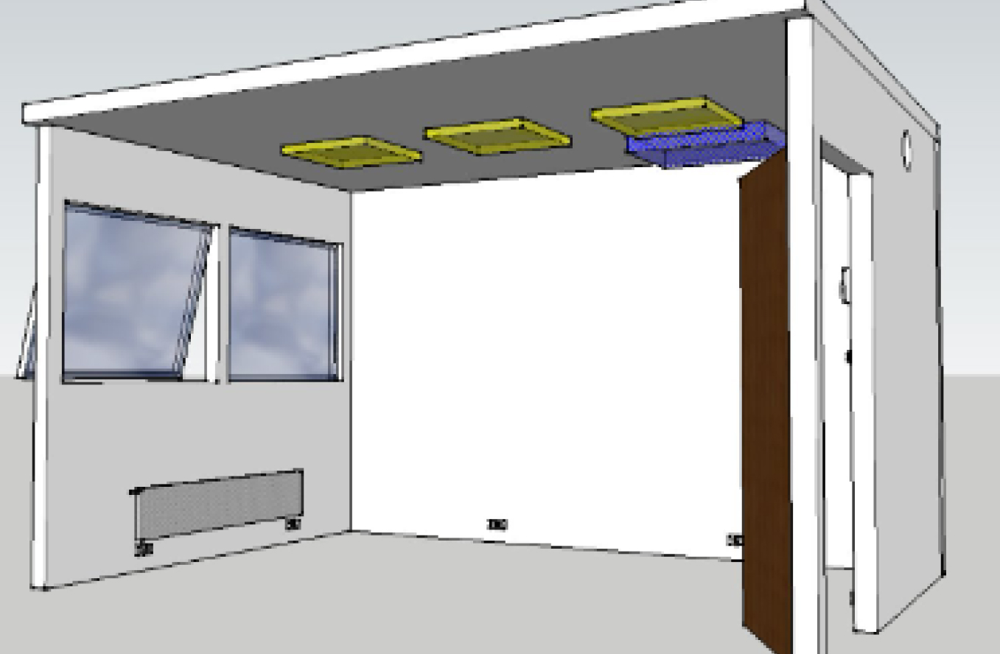

Smart Building: Nous équipons vos bâtiments avec des IoT sur mesure
En intégrant des solutions optimisées d'loT sur mesure, nous offrons une connectivité avancée et une gestion proactive pour vos bâtiments (Occupency, Energy management, Environnement,...)
Nous collectons en temps réel des données cruciales sur vos bâtiments et leurs équipements, puis nous utilisons ces données pour alimenter des outils tels que des tableaux de bord et des modèles d'Intelligence Artificielle avancés.
Cela permet une surveillance continue et une analyse approfondie de la performance opérationnelle et énergétique de vos bâtiments.